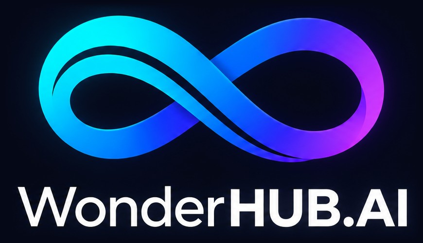

Capitão IA
Embarcação Capitão IA · base Balneário Camboriú · todas as telas
DEMO · DADOS FICTÍCIOSDemonstração da plataforma: leituras, agenda, documentos, diário e guias são fictícios; modelos, registro, Seafire e EPIRB estão SEM DADOS.
PRINCIPAL
Início · web1440 × 900 Início · app390 × 844 Manual de uso19 slides Guia rápido · para quem nunca usouPDF · A4 SOS · webS1 SOS · appS2WEB · CONSOLE E FAQ
Console · TelemetriaA1 GestãoB1 ManutençãoC1 DocumentosG1 AbastecimentoG2 Diário de bordoG3 Equipe e acessosG4 FAQ de bordoF1 FAQ · EstabilizadorF2 FAQ · EletrônicosF3 FAQ · GeradorF4 FAQ · ClimatizaçãoF5 Editar atalhosH3APP · CELULAR
ConsoleA2 Editar blocosA3 SistemasB2 Resposta por vozB3 ManutençãoC2 Modelo de alerta críticoC3 Modo navegaçãoE1 SintomaE2 FAQ de bordoF1 FAQ · EstabilizadorF2 FAQ · EletrônicosF3 FAQ · GeradorF4 FAQ · ClimatizaçãoF5 DocumentosG1 AbastecimentoG2 Diário de bordoG3 Equipe e acessosG4 Editar atalhosH3Atalhos, diário, documentos e equipe ficam salvos neste navegador. Precisa de internet na primeira visita; depois abre offline, inclusive o SOS. No celular, use “Adicionar à tela de início” para abrir como app, em tela cheia. Esta lista: index.html?v=lista